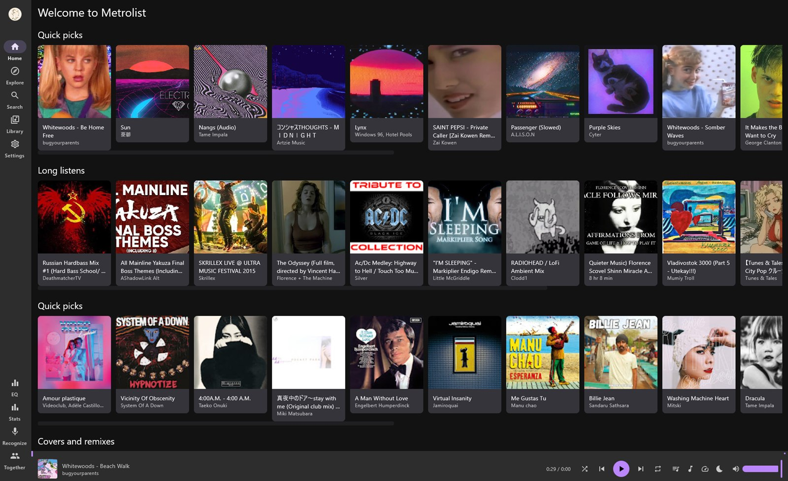

Metrolist DesktopYouTube Music for Windows
A free, open source YouTube Music client for Windows 10 and 11. Your real library, your real playlists, synced lyrics and offline downloads. No ads, no installer, no telemetry.
DownloadWhat It Is
YouTube ships no desktop app for YouTube Music, and a browser tab is not a music player. Metrolist Desktop is a native Windows application that signs in to your own account and talks to the same API the mobile app uses.
It is not a wrapper around the website and not a repackaged Android build. It has its own player, database and sync layer, written for the desktop.

Features
Two-way sync
Liked songs, albums, artists and playlists sync in both directions. Edits made on the desktop reach your YouTube Music account instead of stopping at a local copy.
InnerTube / SQLDelightA real player
Bundled VLC engine with crossfade, a 10-band equalizer, playback speed, sleep timer, skip silence and volume normalization.
VLC / vlcjFive providers
BetterLyrics, LrcLib, KuGou, YouTube lyrics and YouTube transcripts, chained. A track one source misses is usually covered by the next.
Synced / PlainDownloads and export
Keep tracks offline, or export a playlist as loudness-normalized MP3s numbered for a car head unit or a USB stick.
ffmpeg / EBU R128The whole feed
Home, Explore, charts, moods and genres, radio, auto-queue, podcasts, and search with filters and suggestions.
ContinuationsNative extras
Media keys, tray mini player, Discord Rich Presence, Last.fm scrobbling, Listen Together rooms and Shazam recognition.
Windows 10 / 11Install
Download Metrolist-X.Y.Z-portable.zip from
the latest release.
Extract it anywhere. C:\Metrolist works.
Run Metrolist.exe and sign in with your browser. VLC, ffmpeg and the
Java runtime are already inside the archive, so there is nothing else to install.
Prefer a package manager? Either of these works:
winget install Doctordefector.MetrolistDesktopscoop bucket add metrolist https://github.com/Doctordefector/scoop-metrolist
scoop install metrolist-desktopQuestions
Is there an official YouTube Music desktop app for Windows?
No. YouTube ships mobile apps and the web player, nothing native for Windows. Metrolist Desktop is an independent open source client.
Is Metrolist Desktop free?
Yes, free and open source under GPL-3.0. No paid tier, no account of its own, no telemetry.
Do I need a YouTube Music Premium subscription?
No, but it signs in to whichever account you give it, so a Premium account keeps its benefits.
Does it need VLC or Java installed?
No. Both are bundled in the download, along with ffmpeg for exporting.
Does it work on macOS or Linux?
The code is Compose Desktop on the JVM, so it is portable in principle, but only Windows builds are published today.
How do I uninstall it?
Delete the folder. Everything it wrote lives inside it.